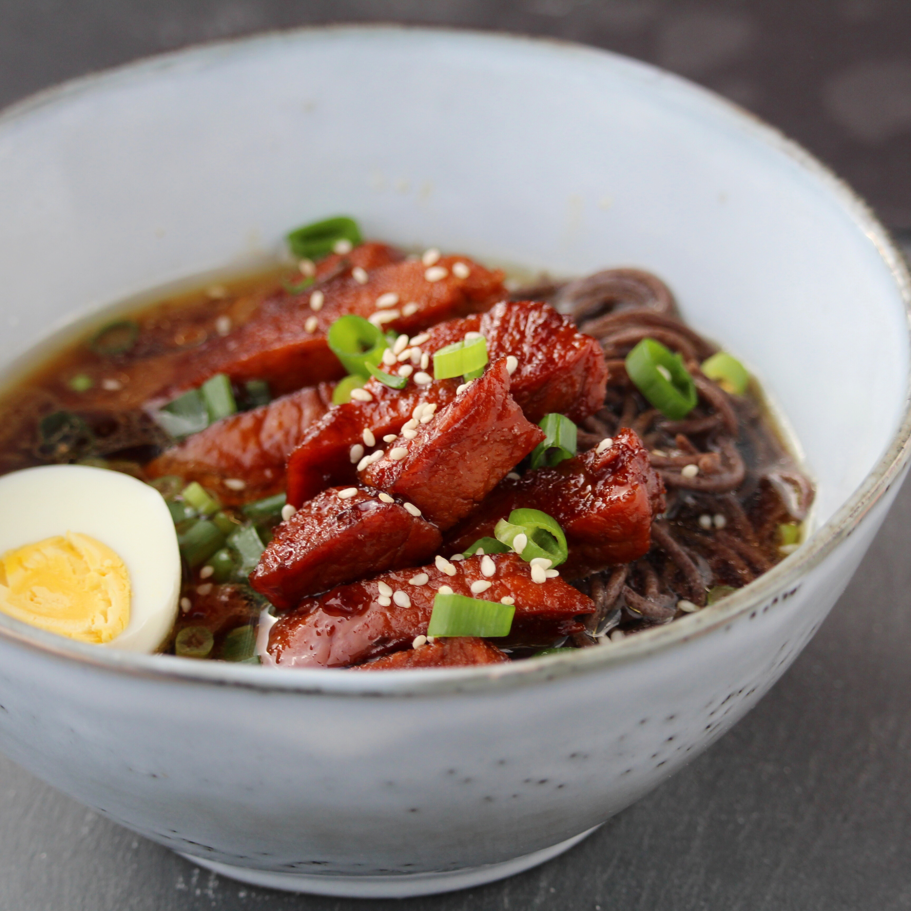

Shoyu Pork

Description
Soy sauce-marinated, slow-cooked pork with just the right amount of sweet taste.
Ingredients
- 1 ½ pounds whole pork belly
- ½ cup soy sauce
- ½ cup packed brown sugar
- ½ cup water
- ½ cup mirin (Japanese sweet wine)
- 2 teaspoons ground ginger
- 11 clove garlic, or to taste
Method
- Place pork belly into a large pot, and cover with water about 1-inch above the pork. Bring to a boil over medium-high heat, and simmer for 2 minutes. Discard water and fill pot with fresh water about 1-inch above the pork. Bring to a boil over medium-high heat, then reduce heat to a simmer. Cook until the pork begins to soften, about 1 hour.
- Remove the pork from the water, and place on a cutting board. Allow pork to cool for a few minutes, then slice off the thick skin and discard. Cut the remaining pork meat into 1-inch wide slices. Set aside.
- Combine the soy sauce, brown sugar, 1/2 cup water, mirin, ginger, and garlic in a large saucepan, and bring to a boil over high heat. Add the sliced pork belly, then bring to a boil again. Reduce heat to low, and place a sheet of aluminum foil directly over the meat and sauce. Simmer uncovered until the pork is tender, 30 to 45 minutes, turning the pork several times to cook evenly.